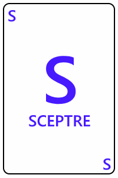
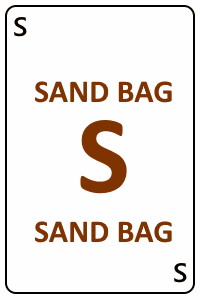
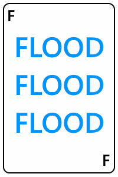

The adventurers land on the Forbidden Island.
Their goal is to discover together the four treasures hidden in the temples of the island and then, succeed in leaving it before it sinks into the depths of the Pacific Ocean.
As soon as they arrive, the adventurers can see whole sections of the island gradually sinking in the wake of terrible floods. We will have to act quickly. We will have to co-operate.
🌊🌊🌊🌊🌊🌊
Each character, in turn, plays the following three phases:
1. player actions: the player performs three actions of his choice.
2. draw two cards: the player draws two resource cards. They can be: treasure cards, equipment cards, or a flood card.
3. floods: Parts of the island are inundated and may disappear permanently.
How to find a treasure:
There are four different treasures to find: the cup, the scepter, the statue, the crystal.
The player must have four similar treasure cards and be on the corresponding temple.
+
+
+
+
🛕 = 🏺
He can thus perform the action 'find a treasure'. The treasure is then added to the team's loot.
If this is the fourth treasure, then the team must leave the island as soon as possible.
How to leave the island: at the end of the game, when they have the four treasures in their possession, all the adventurers must go to the heliport tile and play a helicopter card. Once all on board, the helicopter takes off, carrying the adventurers and their treasures. The game is won.
1. THE ACTIONS :
On each turn, an adventurer can play three actions among which:
move : the player can move his character to an adjacent square, even when it is flooded.
dry : the player can drain an adjacent flooded square. This tile returns to its initial dry status.
sleep : the player ends his turn without doing anything.
give a card : if a player is on the same tile as another player, he can spend an action to give him a card from his hand.
find a treasure : If he is on a temple tile and has four matching treasure cards, the player can find the treasure. The treasure is then added to the team's loot. If this is the fourth different treasure found, then the team must leave the island.
SPECIAL ACTIONS:
Each character has its own special action.
The diver can swim : She can cross the flooded and submerged tiles for free during its movements.
The engineer can dry two tiles for one action.
The pilot can move to any tile for one action (only once per turn).
The explorer can move or dry out orthogonally and diagonally.
can move another player two tiles for one action.
, for one action, can give one of his cards to another adventurer even if he is not on the same tile as the recipient.
2. DRAW TWO RESOURCE CARDS
After performing his three actions, the player draws two resource cards. These cards can be :
 Treasure card : These cards represent one of the four treasures. You have to collect 4 identical ones to pretend to find the treasure.
Helicopter card : This card can be used at any time. One or more characters on the same tile can fly and land on any other tile. This card is discarded after its use.
 Sandbag card : This card can be used at any time. The player can dry a tile of his choice. This card is discarded after its use.
 Flood card : The flood speed increases by 1. The cards in the flooded discard are placed on top of the flood deck, which means that they will come out soon!
⚠ Beware ⚠ At no time can a player have more than 5 cards in hand. He must get rid of his excess cards by throwing them away or playing them immediately.
3. FLOODS : tile cards are drawn from the flood deck. The designated tiles are then flooded. When a flooded tile is flooded again, it sinks for good! The structure it possibly contained (temple or helipad) disappears forever.
The number of cards drawn depends on the flood scale. This number increases as the game progresses when flood cards are drawn.
If a player is on a disappearing tile, he must immediately take refuge in an adjacent tile or use one of his powers to regain dry land.
indicates the state of the resources cards ands flood cards.
Please note :
There are four treasures to find: the Cup, the Scepter, the Statue, the Crystal.
For each treasure, there are two temples on two different tiles.
If the two temples of the same treasure sink before it is discovered, there is no more way to find it, the game is lost. 👎
If the helipad tile is sunk, adventurers will not be able to leave the island. The game is over. 👎
If the flood scale reaches a critical level, the game is over. 👎
If an adventurer is on a dispearing tile and has no way to take refuge on another tile. He is drowning, the game is lost.👎
If all the adventurers are gathered on the helipad, the four treasures have been found and a helicopter card is played, the game is won! 👍👏🌟
Happy treasure hunt on the Forbidden Island!
🈲